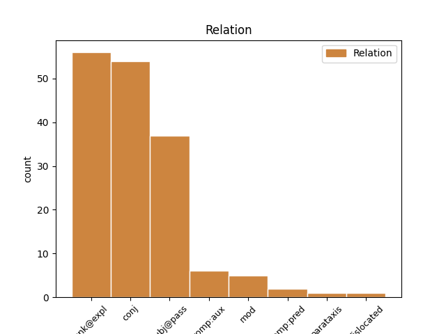
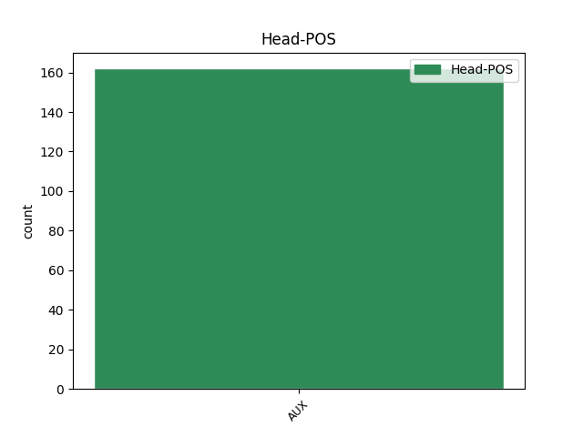
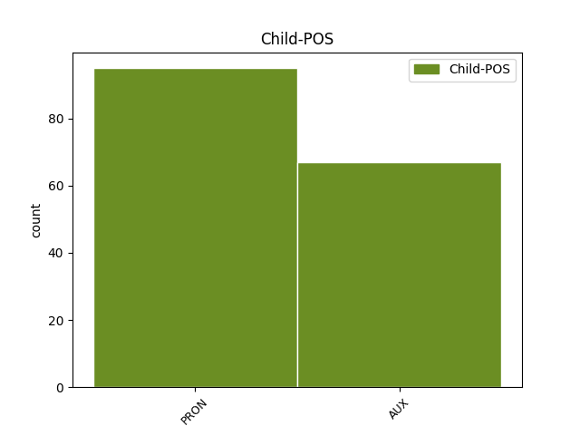

Distribution of features within this leaf



Agreement Rules sorted by frequency.
- When the dependent token is the unk@expl(unk@expl) of the head token, and the head token is AUX and the dependent token is PRON.
1 It it PRON PE Number=Sing|Person=3|PronType=Prs 2 unk@expl _ _
2 is be AUX V Mood=Ind|Number=Sing|Person=3|Tense=Pres|VerbForm=Fin 0 _ _ _
3 not _ _ _ _ 0 _ _ _
4 clear _ _ _ _ 0 _ _ _
5 for _ _ _ _ 0 _ _ _
6 which _ _ _ _ 0 _ _ _
7 companies _ _ _ _ 0 _ _ _
8 Shakespeare _ _ _ _ 0 _ _ _
9 wrote _ _ _ _ 0 _ _ _
10 his _ _ _ _ 0 _ _ _
11 early _ _ _ _ 0 _ _ _
12 plays _ _ _ _ 0 _ _ _
13 . _ _ _ _ 0 _ _ _
1 The _ _ _ _ 0 _ _ _
2 Comedy _ _ _ _ 0 _ _ _
3 of _ _ _ _ 0 _ _ _
4 Errors _ _ _ _ 0 _ _ _
5 was _ _ _ _ 0 _ _ _
6 also _ _ _ _ 0 _ _ _
7 based _ _ _ _ 0 _ _ _
8 on _ _ _ _ 0 _ _ _
9 classical _ _ _ _ 0 _ _ _
10 models _ _ _ _ 0 _ _ _
11 , _ _ _ _ 0 _ _ _
12 but _ _ _ _ 0 _ _ _
13 no _ _ _ _ 0 _ _ _
14 source _ _ _ _ 0 _ _ _
15 for _ _ _ _ 0 _ _ _
16 The _ _ _ _ 0 _ _ _
17 Taming _ _ _ _ 0 _ _ _
18 of _ _ _ _ 0 _ _ _
19 the _ _ _ _ 0 _ _ _
20 Shrew _ _ _ _ 0 _ _ _
21 has _ _ _ _ 0 _ _ _
22 been _ _ _ _ 0 _ _ _
23 found _ _ _ _ 0 _ _ _
24 , _ _ _ _ 0 _ _ _
25 though _ _ _ _ 0 _ _ _
26 it _ _ _ _ 0 _ _ _
27 is be AUX V Mood=Ind|Number=Sing|Person=3|Tense=Pres|VerbForm=Fin 0 _ _ _
28 related _ _ _ _ 0 _ _ _
29 to _ _ _ _ 0 _ _ _
30 a _ _ _ _ 0 _ _ _
31 separate _ _ _ _ 0 _ _ _
32 play _ _ _ _ 0 _ _ _
33 of _ _ _ _ 0 _ _ _
34 the _ _ _ _ 0 _ _ _
35 same _ _ _ _ 0 _ _ _
36 name _ _ _ _ 0 _ _ _
37 and _ _ _ _ 0 _ _ _
38 may may AUX VM Mood=Ind|Person=3|Tense=Pres|VerbForm=Fin 27 conj _ _
39 have _ _ _ _ 0 _ _ _
40 derived _ _ _ _ 0 _ _ _
41 from _ _ _ _ 0 _ _ _
42 a _ _ _ _ 0 _ _ _
43 folk _ _ _ _ 0 _ _ _
44 story _ _ _ _ 0 _ _ _
45 . _ _ _ _ 0 _ _ _
1 By _ _ _ _ 0 _ _ _
2 1800 _ _ _ _ 0 _ _ _
3 , _ _ _ _ 0 _ _ _
4 he he PRON PE Gender=Masc|Number=Sing|Person=3|PronType=Prs 5 subj@pass _ _
5 was be AUX VA Mood=Ind|Number=Sing|Person=3|Tense=Past|VerbForm=Fin 0 _ _ _
6 firmly _ _ _ _ 0 _ _ _
7 enshrined _ _ _ _ 0 _ _ _
8 as _ _ _ _ 0 _ _ _
9 the _ _ _ _ 0 _ _ _
10 national _ _ _ _ 0 _ _ _
11 poet _ _ _ _ 0 _ _ _
12 . _ _ _ _ 0 _ _ _
1 After _ _ _ _ 0 _ _ _
2 a _ _ _ _ 0 _ _ _
3 time _ _ _ _ 0 _ _ _
4 of _ _ _ _ 0 _ _ _
5 neglect _ _ _ _ 0 _ _ _
6 , _ _ _ _ 0 _ _ _
7 a _ _ _ _ 0 _ _ _
8 time _ _ _ _ 0 _ _ _
9 when _ _ _ _ 0 _ _ _
10 we _ _ _ _ 0 _ _ _
11 – _ _ _ _ 0 _ _ _
12 like _ _ _ _ 0 _ _ _
13 the _ _ _ _ 0 _ _ _
14 rest _ _ _ _ 0 _ _ _
15 of _ _ _ _ 0 _ _ _
16 Europe _ _ _ _ 0 _ _ _
17 – _ _ _ _ 0 _ _ _
18 believed _ _ _ _ 0 _ _ _
19 that _ _ _ _ 0 _ _ _
20 the _ _ _ _ 0 _ _ _
21 continent _ _ _ _ 0 _ _ _
22 's _ _ _ _ 0 _ _ _
23 borders _ _ _ _ 0 _ _ _
24 would will AUX VM Mood=Ind|Person=3|Tense=Past|VerbForm=Fin 0 _ _ _
25 never _ _ _ _ 0 _ _ _
26 again _ _ _ _ 0 _ _ _
27 be be AUX VA Mood=Sub|Person=3|Tense=Pres|VerbForm=Fin 24 comp:aux _ _
28 changed _ _ _ _ 0 _ _ _
29 by _ _ _ _ 0 _ _ _
30 force _ _ _ _ 0 _ _ _
31 , _ _ _ _ 0 _ _ _
32 we _ _ _ _ 0 _ _ _
33 are _ _ _ _ 0 _ _ _
34 also _ _ _ _ 0 _ _ _
35 increasing _ _ _ _ 0 _ _ _
36 our _ _ _ _ 0 _ _ _
37 defense _ _ _ _ 0 _ _ _
38 spending _ _ _ _ 0 _ _ _
39 , _ _ _ _ 0 _ _ _
40 despite _ _ _ _ 0 _ _ _
41 our _ _ _ _ 0 _ _ _
42 economy _ _ _ _ 0 _ _ _
43 's _ _ _ _ 0 _ _ _
44 precarious _ _ _ _ 0 _ _ _
45 state _ _ _ _ 0 _ _ _
46 . _ _ _ _ 0 _ _ _
1 " _ _ _ _ 0 _ _ _
2 Christianity _ _ _ _ 0 _ _ _
3 , _ _ _ _ 0 _ _ _
4 and _ _ _ _ 0 _ _ _
5 especially _ _ _ _ 0 _ _ _
6 Catholicism _ _ _ _ 0 _ _ _
7 , _ _ _ _ 0 _ _ _
8 being be AUX V Person=3|VerbForm=Ger 18 mod _ _
9 a _ _ _ _ 0 _ _ _
10 complete _ _ _ _ 0 _ _ _
11 repression _ _ _ _ 0 _ _ _
12 of _ _ _ _ 0 _ _ _
13 man _ _ _ _ 0 _ _ _
14 's _ _ _ _ 0 _ _ _
15 depraved _ _ _ _ 0 _ _ _
16 tendencies _ _ _ _ 0 _ _ _
17 , _ _ _ _ 0 _ _ _
18 is be AUX V Mood=Ind|Number=Sing|Person=3|Tense=Pres|VerbForm=Fin 0 _ _ _
19 the _ _ _ _ 0 _ _ _
20 greatest _ _ _ _ 0 _ _ _
21 element _ _ _ _ 0 _ _ _
22 in _ _ _ _ 0 _ _ _
23 Social _ _ _ _ 0 _ _ _
24 Order _ _ _ _ 0 _ _ _
25 . _ _ _ _ 0 _ _ _
26 " _ _ _ _ 0 _ _ _
1 It _ _ _ _ 0 _ _ _
2 could _ _ _ _ 0 _ _ _
3 , _ _ _ _ 0 _ _ _
4 but _ _ _ _ 0 _ _ _
5 Marx _ _ _ _ 0 _ _ _
6 's _ _ _ _ 0 _ _ _
7 mistake _ _ _ _ 0 _ _ _
8 was be AUX V Mood=Ind|Number=Sing|Person=3|Tense=Past|VerbForm=Fin 0 _ _ _
9 not _ _ _ _ 0 _ _ _
10 a _ _ _ _ 0 _ _ _
11 new _ _ _ _ 0 _ _ _
12 one one PRON PE Number=Sing|Person=3|PronType=Prs 8 comp:pred _ SpaceAfter=No
13 . _ _ _ _ 0 _ _ _
1 And _ _ _ _ 0 _ _ _
2 it _ _ _ _ 0 _ _ _
3 can can AUX VM Mood=Ind|Person=3|Tense=Pres|VerbForm=Fin 0 _ _ _
4 be _ _ _ _ 0 _ _ _
5 a _ _ _ _ 0 _ _ _
6 very _ _ _ _ 0 _ _ _
7 complicated _ _ _ _ 0 _ _ _
8 thing _ _ _ _ 0 _ _ _
9 , _ _ _ _ 0 _ _ _
10 what _ _ _ _ 0 _ _ _
11 human _ _ _ _ 0 _ _ _
12 health _ _ _ _ 0 _ _ _
13 is be AUX V Mood=Ind|Number=Sing|Person=3|Tense=Pres|VerbForm=Fin 3 dislocated _ SpaceAfter=No
14 . _ _ _ _ 0 _ _ _
1 After _ _ _ _ 0 _ _ _
2 all _ _ _ _ 0 _ _ _
3 , _ _ _ _ 0 _ _ _
4 the _ _ _ _ 0 _ _ _
5 volume _ _ _ _ 0 _ _ _
6 of _ _ _ _ 0 _ _ _
7 production _ _ _ _ 0 _ _ _
8 could can AUX VM Mood=Ind|Person=3|Tense=Past|VerbForm=Fin 0 _ _ _
9 not _ _ _ _ 0 _ _ _
10 possibly _ _ _ _ 0 _ _ _
11 expand _ _ _ _ 0 _ _ _
12 enough _ _ _ _ 0 _ _ _
13 to _ _ _ _ 0 _ _ _
14 reemploy _ _ _ _ 0 _ _ _
15 everyone _ _ _ _ 0 _ _ _
16 who _ _ _ _ 0 _ _ _
17 lost _ _ _ _ 0 _ _ _
18 their _ _ _ _ 0 _ _ _
19 job _ _ _ _ 0 _ _ _
20 as _ _ _ _ 0 _ _ _
21 a _ _ _ _ 0 _ _ _
22 handloom _ _ _ _ 0 _ _ _
23 weaver _ _ _ _ 0 _ _ _
24 as _ _ _ _ 0 _ _ _
25 a _ _ _ _ 0 _ _ _
26 machine _ _ _ _ 0 _ _ _
27 - _ _ _ _ 0 _ _ _
28 minder _ _ _ _ 0 _ _ _
29 or _ _ _ _ 0 _ _ _
30 a _ _ _ _ 0 _ _ _
31 carpet _ _ _ _ 0 _ _ _
32 - _ _ _ _ 0 _ _ _
33 seller _ _ _ _ 0 _ _ _
34 , _ _ _ _ 0 _ _ _
35 could can AUX VM Mood=Ind|Person=3|Tense=Past|VerbForm=Fin 8 parataxis _ _
36 it _ _ _ _ 0 _ _ _
37 ? _ _ _ _ 0 _ _ _
Disagree Examples:
1 I _ _ _ _ 0 _ _ _
2 shall shall AUX VM Mood=Ind|Person=3|Tense=Pres|VerbForm=Fin 0 _ _ _
3 also _ _ _ _ 0 _ _ _
4 refer _ _ _ _ 0 _ _ _
5 the _ _ _ _ 0 _ _ _
6 matter _ _ _ _ 0 _ _ _
7 to _ _ _ _ 0 _ _ _
8 the _ _ _ _ 0 _ _ _
9 College _ _ _ _ 0 _ _ _
10 of _ _ _ _ 0 _ _ _
11 Quaestors _ _ _ _ 0 _ _ _
12 , _ _ _ _ 0 _ _ _
13 and _ _ _ _ 0 _ _ _
14 I _ _ _ _ 0 _ _ _
15 am be AUX V Mood=Ind|Number=Sing|Person=1|Tense=Pres|VerbForm=Fin 2 conj _ _
16 certain _ _ _ _ 0 _ _ _
17 that _ _ _ _ 0 _ _ _
18 they _ _ _ _ 0 _ _ _
19 will _ _ _ _ 0 _ _ _
20 be _ _ _ _ 0 _ _ _
21 keen _ _ _ _ 0 _ _ _
22 to _ _ _ _ 0 _ _ _
23 ensure _ _ _ _ 0 _ _ _
24 that _ _ _ _ 0 _ _ _
25 we _ _ _ _ 0 _ _ _
26 comply _ _ _ _ 0 _ _ _
27 with _ _ _ _ 0 _ _ _
28 the _ _ _ _ 0 _ _ _
29 regulations _ _ _ _ 0 _ _ _
30 we _ _ _ _ 0 _ _ _
31 ourselves _ _ _ _ 0 _ _ _
32 vote _ _ _ _ 0 _ _ _
33 on _ _ _ _ 0 _ _ _
34 . _ _ _ _ 0 _ _ _
1 I _ _ _ _ 0 _ _ _
2 would _ _ _ _ 0 _ _ _
3 appreciate _ _ _ _ 0 _ _ _
4 it _ _ _ _ 0 _ _ _
5 if _ _ _ _ 0 _ _ _
6 , _ _ _ _ 0 _ _ _
7 on _ _ _ _ 0 _ _ _
8 the _ _ _ _ 0 _ _ _
9 close _ _ _ _ 0 _ _ _
10 of _ _ _ _ 0 _ _ _
11 this _ _ _ _ 0 _ _ _
12 item _ _ _ _ 0 _ _ _
13 of _ _ _ _ 0 _ _ _
14 business _ _ _ _ 0 _ _ _
15 , _ _ _ _ 0 _ _ _
16 I I PRON PE Number=Sing|Person=1|PronType=Prs 17 subj@pass _ _
17 might may AUX VM Mood=Ind|Person=3|Tense=Past|VerbForm=Fin 0 _ _ _
18 be _ _ _ _ 0 _ _ _
19 allowed _ _ _ _ 0 _ _ _
20 to _ _ _ _ 0 _ _ _
21 give _ _ _ _ 0 _ _ _
22 an _ _ _ _ 0 _ _ _
23 explanation _ _ _ _ 0 _ _ _
24 of _ _ _ _ 0 _ _ _
25 vote _ _ _ _ 0 _ _ _
26 on _ _ _ _ 0 _ _ _
27 behalf _ _ _ _ 0 _ _ _
28 of _ _ _ _ 0 _ _ _
29 my _ _ _ _ 0 _ _ _
30 Group _ _ _ _ 0 _ _ _
31 . _ _ _ _ 0 _ _ _
1 Madam _ _ _ _ 0 _ _ _
2 President _ _ _ _ 0 _ _ _
3 , _ _ _ _ 0 _ _ _
4 I _ _ _ _ 0 _ _ _
5 do do AUX VM Mood=Ind|Number=Sing|Person=1|Tense=Pres|VerbForm=Fin 0 _ _ _
6 not _ _ _ _ 0 _ _ _
7 wish _ _ _ _ 0 _ _ _
8 to _ _ _ _ 0 _ _ _
9 reopen _ _ _ _ 0 _ _ _
10 the _ _ _ _ 0 _ _ _
11 debate _ _ _ _ 0 _ _ _
12 , _ _ _ _ 0 _ _ _
13 but _ _ _ _ 0 _ _ _
14 I _ _ _ _ 0 _ _ _
15 had have AUX VA Mood=Ind|Person=3|Tense=Past|VerbForm=Fin 5 conj _ _
16 also _ _ _ _ 0 _ _ _
17 asked _ _ _ _ 0 _ _ _
18 for _ _ _ _ 0 _ _ _
19 the _ _ _ _ 0 _ _ _
20 floor _ _ _ _ 0 _ _ _
21 , _ _ _ _ 0 _ _ _
22 to _ _ _ _ 0 _ _ _
23 comment _ _ _ _ 0 _ _ _
24 on _ _ _ _ 0 _ _ _
25 Mr _ _ _ _ 0 _ _ _
26 Barón _ _ _ _ 0 _ _ _
27 Crespo _ _ _ _ 0 _ _ _
28 's _ _ _ _ 0 _ _ _
29 motion _ _ _ _ 0 _ _ _
30 . _ _ _ _ 0 _ _ _
1 We we PRON PE Number=Plur|Person=1|PronType=Prs 2 subj@pass _ _
2 might may AUX VM Mood=Ind|Person=3|Tense=Past|VerbForm=Fin 0 _ _ _
3 be _ _ _ _ 0 _ _ _
4 mistaken _ _ _ _ 0 _ _ _
5 in _ _ _ _ 0 _ _ _
6 using _ _ _ _ 0 _ _ _
7 the _ _ _ _ 0 _ _ _
8 gross _ _ _ _ 0 _ _ _
9 domestic _ _ _ _ 0 _ _ _
10 product _ _ _ _ 0 _ _ _
11 per _ _ _ _ 0 _ _ _
12 inhabitant _ _ _ _ 0 _ _ _
13 as _ _ _ _ 0 _ _ _
14 the _ _ _ _ 0 _ _ _
15 sole _ _ _ _ 0 _ _ _
16 indicator _ _ _ _ 0 _ _ _
17 . _ _ _ _ 0 _ _ _
1 The _ _ _ _ 0 _ _ _
2 Europeans _ _ _ _ 0 _ _ _
3 do do AUX VM Mood=Ind|Number=Sing|Person=1|Tense=Pres|VerbForm=Fin 0 _ _ _
4 not _ _ _ _ 0 _ _ _
5 need _ _ _ _ 0 _ _ _
6 their _ _ _ _ 0 _ _ _
7 current _ _ _ _ 0 _ _ _
8 level _ _ _ _ 0 _ _ _
9 of _ _ _ _ 0 _ _ _
10 representation _ _ _ _ 0 _ _ _
11 , _ _ _ _ 0 _ _ _
12 and _ _ _ _ 0 _ _ _
13 the _ _ _ _ 0 _ _ _
14 positions _ _ _ _ 0 _ _ _
15 and _ _ _ _ 0 _ _ _
16 voices _ _ _ _ 0 _ _ _
17 of _ _ _ _ 0 _ _ _
18 middle _ _ _ _ 0 _ _ _
19 - _ _ _ _ 0 _ _ _
20 and _ _ _ _ 0 _ _ _
21 lower _ _ _ _ 0 _ _ _
22 - _ _ _ _ 0 _ _ _
23 income _ _ _ _ 0 _ _ _
24 countries _ _ _ _ 0 _ _ _
25 should shall AUX VM Mood=Ind|Person=3|Tense=Past|VerbForm=Fin 3 conj _ _
26 be _ _ _ _ 0 _ _ _
27 strengthened _ _ _ _ 0 _ _ _
28 . _ _ _ _ 0 _ _ _